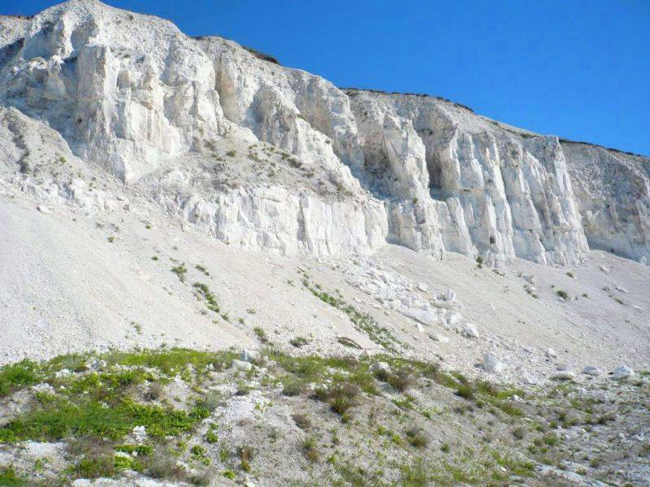
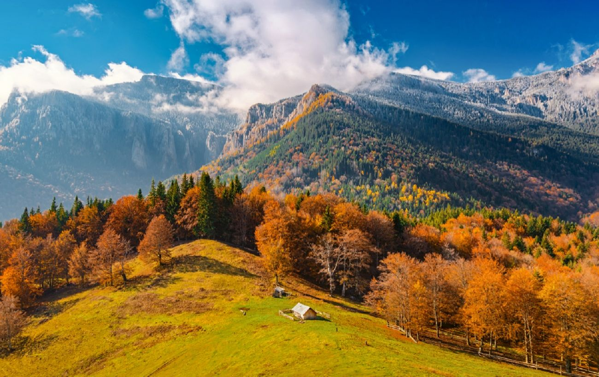
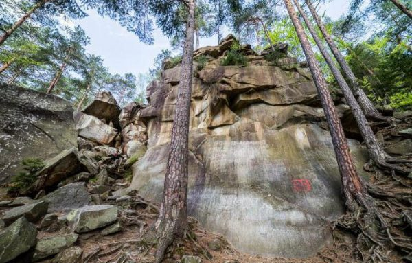
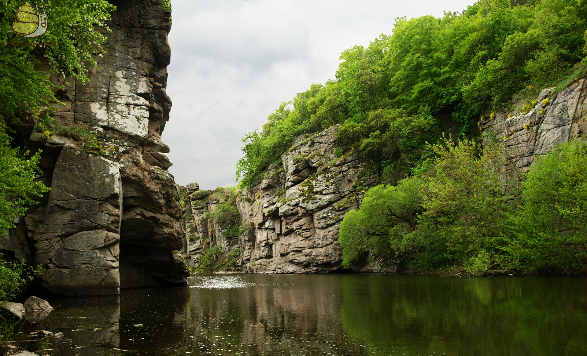
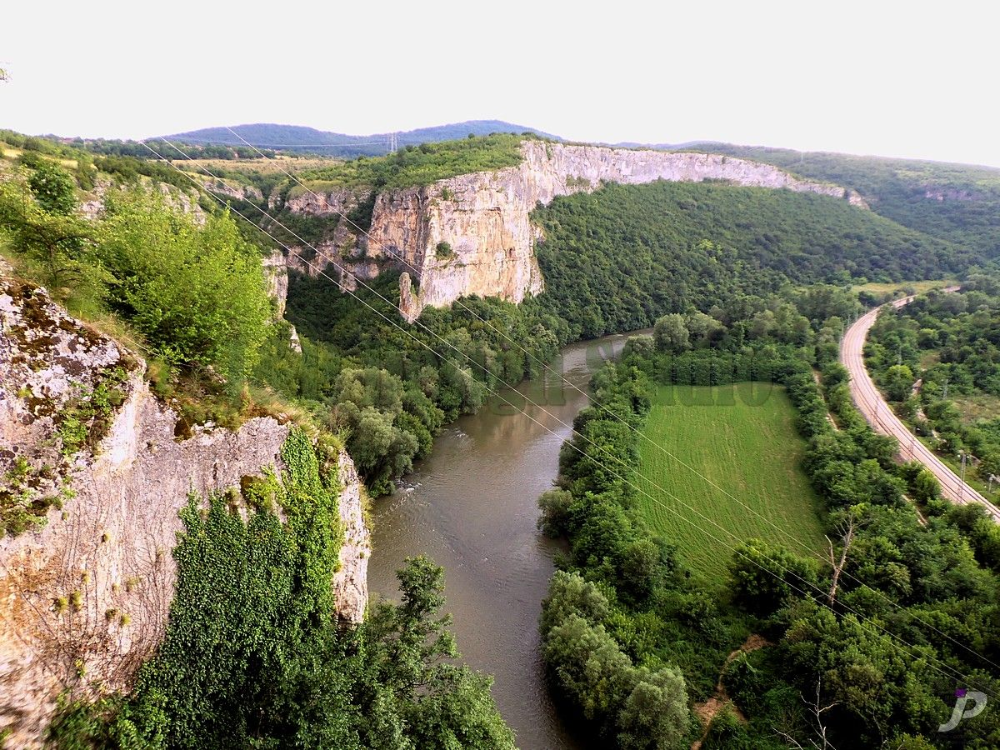
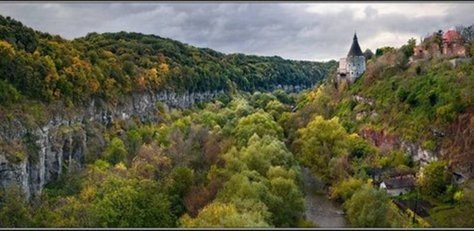
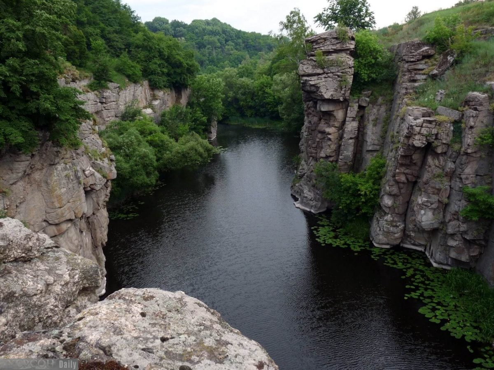

Неймовірні українські ландшафти, які захочеться побачити наживо
Крейдяні гори (Харківська область)

Колись ця довга гряда білих пагорбів, що утворилася понад 70 мільйонів років тому, знаходилася під водами древнього моря. Зараз же вона на кілька десятків кілометрів простягається вздовж річки Оскіл, а її найцікавіша частина знаходиться між селами Новомлинськ і Кам'янка.
Завдяки тому, що крейдяні схили залишились майже недоторканими, збереглася й поширена у цій місцевості рослинність. До того ж тут можна не лише фотографуватися і розглядати краєвиди з високих пагорбів, а й оздоровитися, адже на території заповідника є джерела з лікувальною мінеральною водою.
Карпати

Вони щоразу різні, і ти ніколи не вгадаєш, чим гори вражатимуть цього разу. Карпати мають непростий характер, але завжди раді вітати кожного, хто щиро їх полюбить.
Скелі Довбуша (Івано-Франківська область)

Цікаво, що ці велетенські кам’яні брили – однолітки з Крейдяними горами, і вони також колись утворилися на дні старовинної водойми.
Скельно-печерний комплекс назвали на честь відомого ватажка опришків – Олекси Довбуша, і недарма: за переказами, у 17-18 століттях в кам’яних «лабіринтах» таборували повстанці.
Наразі зустріти опришків на території унікальної пам’ятки не вийде, але підкорити норовливі «Скелі Довбуша» та надихнутися їхньою могутністю – легко!
Літо – це пора, коли сам Господь велів насолоджуватися відпочинком. Адже все цьому сприяє: теплі сонячні дні, неймовірна природа та літні відпустки. Якщо вдало поєднати всі ці пункти – вийде незабутнє літо, яке ви можете провести серед мальовничих куточків рідної України. Сонце, повітря, вода і навколишні краєвиди – все це буде дарувати вам лише радість і позитивні емоції.
Українські каньйони, від краси яких перехоплює подих
Буцький каньйон (Черкаська область)

Кам’яним берегам каньйону, які розташовані на річці Гірський Тікич, вже приблизно два мільярди років. Тому не дивно, що окрім дивовижних видів тебе здивує загадковість цього місця – в каньйоні є залишки рукотворної споруди з великих кам’яних брил, які нагадують відомий Стоунхендж.
Якщо ж розмірений відпочинок не твій варіант, і хочеться адреналіну та вражень, це все одно чудова нагода відвідати Буцький каньйон. На його скелях практикуються альпіністи, а порогами річки веслують сміливці на байдарках.
Дністровський каньйон (Тернопільська область)

Його називають одним із семи природних чудес України, адже звідси відкривається захопливий краєвид на вигин Дністра. Посеред розташований відомий Заліщицький півострів, тож будь-яка точка каньйону слугуватиме за оглядовий майданчик із розкішною панорамою.
Якщо ж розмірений відпочинок не твій варіант, і хочеться адреналіну та вражень, це все одно чудова нагода відвідати Буцький каньйон. На його скелях практикуються альпіністи, а порогами річки веслують сміливці на байдарках.
Смотрицький каньйон у Кам’янці-Подільському

Актовський каньйон (Миколаївська область)

Виявляється, до «Молодшого брата» Гранд-Каньйону рукою сягнути, адже місцевість тут дуже схожа на Північну Америку. За свій ландшафт та моторошну назву річки – Мертвовод, ці гранітні скелі й валуни отримали назву «Долина диявола».
Каньйон відвідує мало туристів, але не через страхітливі легенди, а тому, що він важкодоступний – спуск у долину досить складний та небезпечний, і не кожен наважиться подолати цей шлях.
Уся інформація за посиланням на: